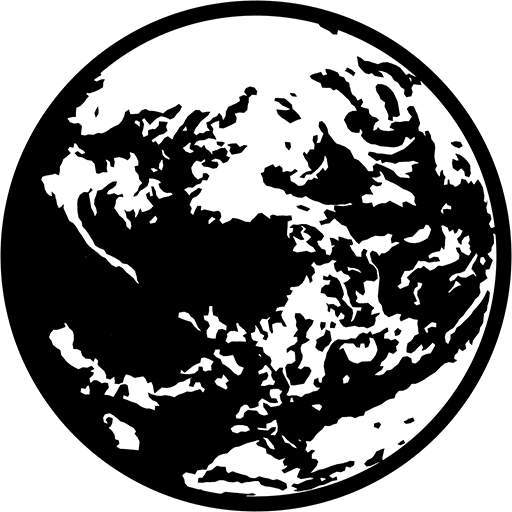

 Mother 1+2
Details
| Playtime | Not Played |
| Last Activity | Never |
| Added | 21/02/2024 3:22:44 |
| Modified | 20/05/2024 22:32:56 |
| Completion Status | Not Played |
| Library | Playnite |
| Source | |
| Platform | Nintendo Game Boy Advance |
| Release Date | 20/06/2003 |
| Community Score | 87 |
| Critic Score | |
| User Score | 0 |
| Genre | RPG |
| Developer | Ape |
| Publisher | Nintendo |
| Feature | Single Player |
| Links | |
| Tag | |
Description
Writer and director Shigesato Itoi pitched Mother's concept to Shigeru Miyamoto while visiting Nintendo's headquarters for other business. Though Miyamoto rejected the proposal at first, he eventually gave Itoi a development team. A North American version of the game was localized into English, but was abandoned as commercially nonviable. A copy of this prototype was later found and circulated on the Internet under the informal title EarthBound Zero. The game was eventually released globally as EarthBound Beginnings for the Wii U Virtual Console in June 2015 and Nintendo Switch Online in February 2022.
Mother was the sixth best-selling game of 1989 in Japan, where it sold about 400,000 copies and received a "Silver Hall of Fame" score from Famitsu magazine. Mother was praised for its similarities to the Dragon Quest series and its simultaneous parody of the genre's tropes, but many considered its sequel Mother 2: Gīgu no Gyakushū (known outside as EarthBound) to be similar and a better overall implementation of Mother's gameplay ideas, with the game's high difficulty level polarizing critics, along with balance issues. Jeremy Parish of 1UP.com wrote that Mother importantly generated interest in video game emulation and the historical preservation of unreleased games. The game was re-released in Japan on the single-cartridge compilation Mother 1+2 for the Game Boy Advance in 2003.